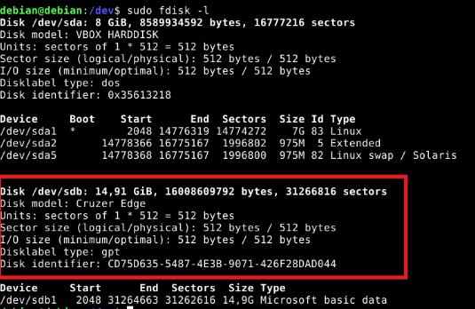
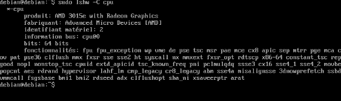
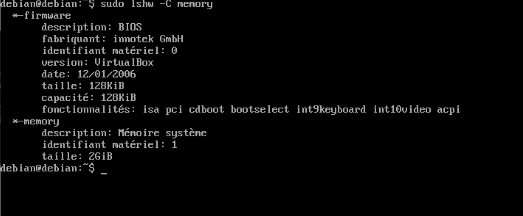
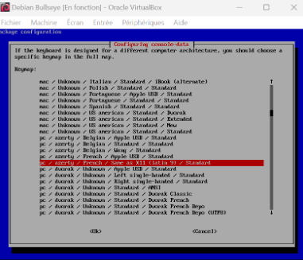
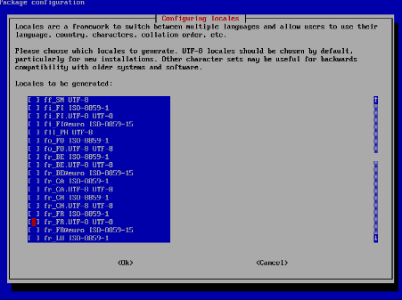

SAE 1.03 - Découverte et Initiation à l'Informatique
Cette SAE regroupe plusieurs activités d'initiation à l'informatique, de la configuration système à l'administration avancée. L'objectif était de maîtriser les environnements Linux, la gestion des utilisateurs, l'installation de logiciels et la manipulation de périphériques.
Description du projet
Le projet SAE 1.03 s'est articulé autour de quatre activités principales : configuration d'un système Linux Debian, administration des utilisateurs et installation de logiciels, gestion des dossiers partagés et des périphériques, et manipulation avancée des systèmes de fichiers. Chaque activité visait à développer l'autonomie technique et la maîtrise des outils d'administration système.
Aspects techniques
Technologies et environnements
Debian Linux 11.11
VirtualBox (machine virtuelle)
XFCE4 (environnement graphique léger)
Terminal XFCE4-terminal
Outils de partitionnement : fdisk, gparted
Compétences développées
Configuration système, gestion des paquets APT
Administration utilisateurs et privilèges sudo
Gestion des périphériques (USB, audio, webcam, bluetooth)
Systèmes de fichiers (FAT32, NTFS, EXT4)
Partitionnement et formatage
Outils utilisés
Commandes : apt-get, fdisk, lshw, dmesg
Éditeur nano
SSH pour connexions distantes
Gestionnaire de fichiers, dossiers partagés
Applications multimédia : smplayer, mplayer
Illustration

Gère les tables de partitions des disques (création, suppression, modification).

Affiche une liste détaillée de tous les composants matériels de l'ordinateur(cpu).

Affiche une liste détaillée de tous les composants matériels de l'ordinateur(ram).

Configuration du clavier.

Configuration des locales pour le français (sudo dpkg-reconfigure locales).
Compétences acquises
Administration système Linux
Maîtrise des commandes fondamentales, gestion des utilisateurs et des privilèges, installation et configuration de paquets logiciels.
Gestion des périphériques
Configuration et utilisation des dispositifs USB, audio et vidéo, dossiers partagés et communication entre systèmes.
Systèmes de fichiers avancés
Partitionnement, formatage multi-format, et utilisation d'outils graphiques et en ligne de commande pour la gestion du stockage.
Méthodologie
Configuration initiale : Installation et configuration du système Debian avec mise à jour des paquets
Administration utilisateurs : Création de comptes, attribution des privilèges et gestion des groupes
Installation de logiciels : Déploiement d'applications système et d'interface graphique
Gestion des périphériques : Configuration et test des dispositifs externes
Manipulation des fichiers : Partitionnement et formatage avec outils en ligne de commande et graphiques
Résultats
Autonomie technique : Capacité à administrer un système Linux de manière indépendante
Maîtrise des outils : Utilisation experte des commandes système et des interfaces graphiques
Résolution de problèmes : Diagnostic et correction des dysfonctionnements système
Gestion multi-environnements : Travail efficace avec virtualisation et dossiers partagés
Administration complète : De la configuration initiale à la maintenance avancée du système